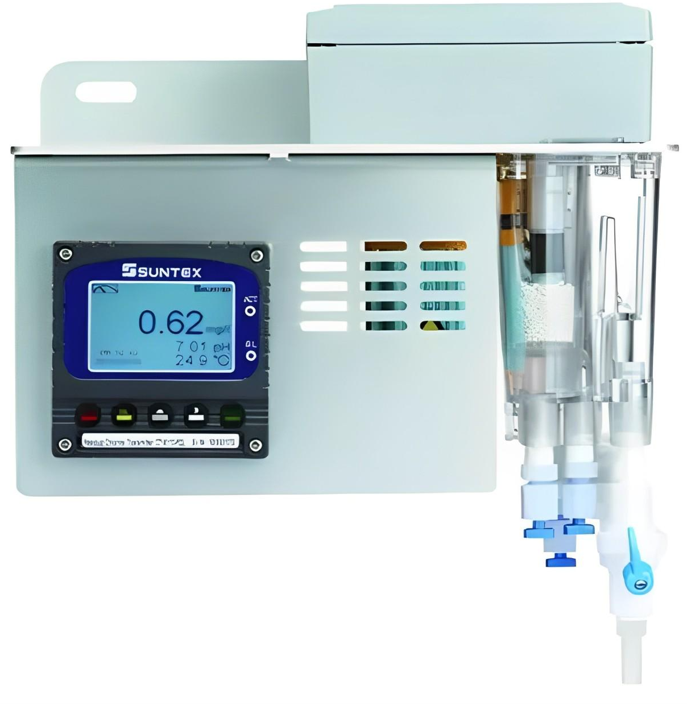

Installation Guides
How to Install Your Agua Instruments Gas Analyzer: A Step-by-Step Guide.
Read More
At Agua Instruments Private Limited, we take pride in being a premier environmental solution provider in India. Our headquarters is in Mumbai, and we have a strong presence in major cities such as Mumbai, Delhi, Kolkata, Bangalore, and Chennai, enabling us to offer top-notch environmental services nationwide. As system integrators and solutions providers in the fields of Process Analytics, Process Instrumentation, Environment, and Emission Monitoring & Automation, we specialize in delivering tailored comprehensive solutions to meet our clients' specific needs.


Our expertise covers a wide range of process solutions, including pressure, level, flow, temperature, analytics, recording, and digital communications as we strive to provide Advanced Environmental Compliance Solutions in India. From managing drinking water to sewage and wastewater, our innovative enterprise is committed to addressing the diverse needs of the water industry in India and its major cities. We are also dedicated to expanding our reach and making significant contributions to the emission monitoring market.
Our clientele spans across various industries, including Dye & Dye Intermediate, Pulp & Paper, Pesticides, Pharmaceuticals, Tanneries, Distillery, Sugar, Power Plants, Cement, Oil Refineries, Fertilizer, Chloral Alkali Plants, Common Bio-Medical Waste, Common Effluent Treatment Plants (CETP), Sewage Treatment Plants (STPs), and Common Hazardous Waste Incinerators, among others.
At Agua Instruments, our mission is to provide cutting-edge environmental solutions that not only meet but exceed the expectations of our clients, ensuring a cleaner, safer, and more sustainable future for all.


.jpg)

At Agua Instruments Private Limited, we offer a wide range of specialized products tailored to meet the diverse needs of various industries. Our innovative solutions are designed to enhance operational efficiency, ensure regulatory compliance, and promote environmental sustainability in India. Here's a glimpse of our industry-specific products:
Water Treatment Solutions:
Process Analytics Instruments:
Emission Monitoring Systems:
Process Instrumentation:
Automation and Control Systems:
Environmental Monitoring Equipment:
Our products are meticulously engineered to deliver exceptional performance, reliability, and accuracy, making Agua Instruments a trusted partner for industries seeking cutting-edge solutions for their unique requirements.


We believe in the power of collaboration to drive innovation and deliver exceptional results. That's why we partner with industry leaders to provide our clients with cutting-edge solutions and comprehensive support.
Our strategic partnerships with renowned companies such as Suntex, Maxx, Airpointer, Hemera, and LKS enable us to offer a diverse range of products and services tailored to meet the unique needs of our clients. These partnerships empower us to deliver state-of-the-art technology, reliable instrumentation, and unparalleled expertise in environmental monitoring and process analytics.
These strategic collaborations empower us to deliver advanced environmental monitoring systems, precision process instrumentation, and world-class industrial automation solutions across India. Together with our partners, we are committed to driving sustainable industrial growth and environmental responsibility.
At Agua Instruments, we're committed to fostering long-term partnerships built on trust, integrity, and mutual success. Together with our esteemed partners, we're dedicated to empowering our clients to achieve their goals and make a positive impact on the environment and society.

How to Install Your Agua Instruments Gas Analyzer: A Step-by-Step Guide.
Read More
Calibrating Your Water Analyzer: Best Practices for Accurate Results.
Read More
Troubleshooting Your Dust Analyzer: Common Issues and Solutions.
Read MoreOur blog at Agua Instruments is your trusted source for the latest in environmental monitoring, industrial process instrumentation, and especially water monitoring in India. Stay informed with expert articles, case studies, technical insights, and industry updates.
Whether you're in Mumbai or anywhere across the country, explore topics covering regulatory trends, industry best practices, and innovative solutions for industrial process optimization and environmental compliance.
At Agua Instruments, our clients are at the heart of everything we do. From multinational corporations to small businesses, we serve a diverse array of industries in Mumbai and across India with tailored solutions for their environmental monitoring and process automation needs. With a commitment to excellence and innovation, we work closely with each client to deliver reliable, efficient, and cost-effective solutions that meet their unique requirements. Join our growing list of satisfied clients and experience the difference with Agua Instruments.


Our commitment to excellence is reflected in the satisfaction of our clients. Here's what some of them have to say about their experience working with us:
"Agua Instruments has been a trusted partner in our environmental monitoring journey. Their expertise, reliability, and dedication have consistently exceeded our expectations.”
"Working with Agua Instruments has been a game-changer for us. Their innovative solutions and personalized support have helped us streamline our processes and achieve greater efficiency."
"We're impressed with the professionalism and depth of knowledge demonstrated by the Agua Instruments team. They've been instrumental in helping us meet our environmental goals and regulations."
These testimonials are a testament to our unwavering commitment to delivering high-quality solutions and exceptional service to our clients. At Agua Instruments, we value our relationships and strive to earn the trust and satisfaction of every client we serve.